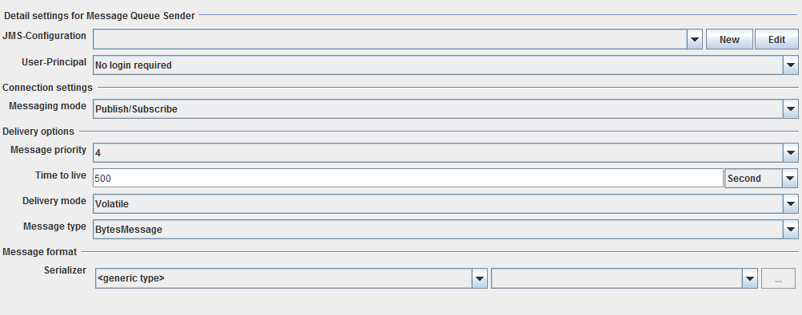

Message Queue Sender

Topic content
Description
This channel is used to transfer messages with a message oriented middleware(MOM). The Orchestra standard API JMS is used for that.
Configuration
The dialog to configure the Message Queue Sender looks like:

JMS-Configuration: Choose an appropriate environment entry.
User-Principal: (Optional) Choose a user.
Message mode: Choose Publish/Subscribe to register at publisher or Point to point to have only one receiver.
Message priority: Define the priority of the message.
Time to live: Define the duration, the messages are valid.
Delivery mode: Choose volatile, to work with the memory or persistent to work with the database
Message type: Choose a JMS message type.
Serializer: Choose an appropriate serializer.
See also
To set up a user, go to Credentials